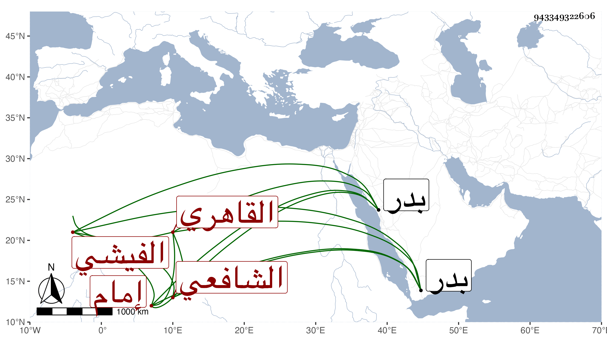

0902Sakhawi.DawLamic.ITO20230111-ara1.EIS1600.943349322606
Biography ID: 943349322606
449
حسن بن علي بن محمد بن عبد الله البدر الفيشي ثم القاهري الشافعي إمام المؤيدية . اشتغل عند الشريف النسابة وغيره ، وأتقن القراءات مع الزين عبد الغني الهيثمي وغيره وأم بالمؤيدية نيابة وازدحم العامة على سماعه خصوصا في ليالي رمضان ، وكان لا بأس به . مات في رجوعه من الحج ببدر في ذي الحجة سنة تسع وسبعين وأظنه زاد على الخمسين رحمه الله .
